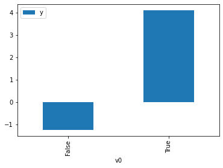
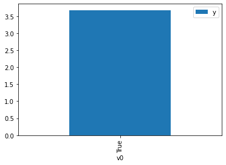

Demo for the DoWhy causal API
We show a simple example of adding a causal extension to any dataframe.
[1]:
import dowhy.datasets
import dowhy.api
import numpy as np
import pandas as pd
from statsmodels.api import OLS
[2]:
data = dowhy.datasets.linear_dataset(beta=5,
num_common_causes=1,
num_instruments = 0,
num_samples=1000,
treatment_is_binary=True)
df = data['df']
df['y'] = df['y'] + np.random.normal(size=len(df)) # Adding noise to data. Without noise, the variance in Y|X, Z is zero, and mcmc fails.
#data['dot_graph'] = 'digraph { v ->y;X0-> v;X0-> y;}'
treatment= data["treatment_name"][0]
outcome = data["outcome_name"][0]
common_cause = data["common_causes_names"][0]
df
[2]:
| W0 | v0 | y | |
|---|---|---|---|
| 0 | -1.294864 | False | -2.591832 |
| 1 | -1.364902 | False | 0.096660 |
| 2 | 0.416330 | True | 4.582538 |
| 3 | -1.016698 | False | -1.522857 |
| 4 | -0.880081 | True | 4.235542 |
| ... | ... | ... | ... |
| 995 | 0.368889 | True | 6.060552 |
| 996 | 0.989875 | True | 5.562653 |
| 997 | -1.885617 | False | -2.530255 |
| 998 | -0.955594 | True | 4.839297 |
| 999 | -1.056680 | False | -2.054465 |
1000 rows × 3 columns
[3]:
# data['df'] is just a regular pandas.DataFrame
df.causal.do(x=treatment,
variable_types={treatment: 'b', outcome: 'c', common_cause: 'c'},
outcome=outcome,
common_causes=[common_cause],
proceed_when_unidentifiable=True).groupby(treatment).mean().plot(y=outcome, kind='bar')
[3]:
<AxesSubplot:xlabel='v0'>

[4]:
df.causal.do(x={treatment: 1},
variable_types={treatment:'b', outcome: 'c', common_cause: 'c'},
outcome=outcome,
method='weighting',
common_causes=[common_cause],
proceed_when_unidentifiable=True).groupby(treatment).mean().plot(y=outcome, kind='bar')
[4]:
<AxesSubplot:xlabel='v0'>

[5]:
cdf_1 = df.causal.do(x={treatment: 1},
variable_types={treatment: 'b', outcome: 'c', common_cause: 'c'},
outcome=outcome,
dot_graph=data['dot_graph'],
proceed_when_unidentifiable=True)
cdf_0 = df.causal.do(x={treatment: 0},
variable_types={treatment: 'b', outcome: 'c', common_cause: 'c'},
outcome=outcome,
dot_graph=data['dot_graph'],
proceed_when_unidentifiable=True)
[6]:
cdf_0
[6]:
| W0 | v0 | y | propensity_score | weight | |
|---|---|---|---|---|---|
| 0 | -0.476165 | False | -0.623095 | 0.673826 | 1.484062 |
| 1 | 0.549599 | False | 0.914181 | 0.246227 | 4.061285 |
| 2 | -0.760998 | False | -0.190339 | 0.775161 | 1.290054 |
| 3 | -1.700690 | False | -1.213734 | 0.949180 | 1.053541 |
| 4 | 0.753456 | False | 1.811265 | 0.184616 | 5.416645 |
| ... | ... | ... | ... | ... | ... |
| 995 | -2.270350 | False | -3.436057 | 0.981138 | 1.019224 |
| 996 | -1.030239 | False | -0.029662 | 0.848360 | 1.178745 |
| 997 | -2.631287 | False | -2.545266 | 0.990054 | 1.010046 |
| 998 | 0.619348 | False | 0.750938 | 0.223697 | 4.470326 |
| 999 | -1.124690 | False | -2.400391 | 0.868941 | 1.150826 |
1000 rows × 5 columns
[7]:
cdf_1
[7]:
| W0 | v0 | y | propensity_score | weight | |
|---|---|---|---|---|---|
| 0 | -0.612761 | True | 4.376039 | 0.274651 | 3.640978 |
| 1 | -1.600940 | True | 1.750087 | 0.060203 | 16.610565 |
| 2 | -0.983826 | True | 3.921403 | 0.162691 | 6.146638 |
| 3 | -0.119924 | True | 5.541541 | 0.478762 | 2.088721 |
| 4 | -2.805845 | True | 0.515814 | 0.007286 | 137.241700 |
| ... | ... | ... | ... | ... | ... |
| 995 | -1.421222 | True | 3.552183 | 0.081301 | 12.300034 |
| 996 | -2.169013 | True | 4.615345 | 0.022546 | 44.352872 |
| 997 | -0.983826 | True | 3.921403 | 0.162691 | 6.146638 |
| 998 | -0.954808 | True | 4.282011 | 0.169924 | 5.884997 |
| 999 | 0.008717 | True | 4.302499 | 0.536510 | 1.863899 |
1000 rows × 5 columns
Comparing the estimate to Linear Regression
First, estimating the effect using the causal data frame, and the 95% confidence interval.
[8]:
(cdf_1['y'] - cdf_0['y']).mean()
/home/amshar/python-environments/vpy38/lib/python3.8/site-packages/IPython/lib/latextools.py:126: MatplotlibDeprecationWarning:
The to_png function was deprecated in Matplotlib 3.4 and will be removed two minor releases later. Use mathtext.math_to_image instead.
mt.to_png(f, s, fontsize=12, dpi=dpi, color=color)
/home/amshar/python-environments/vpy38/lib/python3.8/site-packages/IPython/lib/latextools.py:126: MatplotlibDeprecationWarning:
The to_rgba function was deprecated in Matplotlib 3.4 and will be removed two minor releases later. Use mathtext.math_to_image instead.
mt.to_png(f, s, fontsize=12, dpi=dpi, color=color)
/home/amshar/python-environments/vpy38/lib/python3.8/site-packages/IPython/lib/latextools.py:126: MatplotlibDeprecationWarning:
The to_mask function was deprecated in Matplotlib 3.4 and will be removed two minor releases later. Use mathtext.math_to_image instead.
mt.to_png(f, s, fontsize=12, dpi=dpi, color=color)
/home/amshar/python-environments/vpy38/lib/python3.8/site-packages/IPython/lib/latextools.py:126: MatplotlibDeprecationWarning:
The MathtextBackendBitmap class was deprecated in Matplotlib 3.4 and will be removed two minor releases later. Use mathtext.math_to_image instead.
mt.to_png(f, s, fontsize=12, dpi=dpi, color=color)
[8]:
$\displaystyle 4.80035696794059$
[9]:
1.96*(cdf_1['y'] - cdf_0['y']).std() / np.sqrt(len(df))
/home/amshar/python-environments/vpy38/lib/python3.8/site-packages/IPython/lib/latextools.py:126: MatplotlibDeprecationWarning:
The to_png function was deprecated in Matplotlib 3.4 and will be removed two minor releases later. Use mathtext.math_to_image instead.
mt.to_png(f, s, fontsize=12, dpi=dpi, color=color)
/home/amshar/python-environments/vpy38/lib/python3.8/site-packages/IPython/lib/latextools.py:126: MatplotlibDeprecationWarning:
The to_rgba function was deprecated in Matplotlib 3.4 and will be removed two minor releases later. Use mathtext.math_to_image instead.
mt.to_png(f, s, fontsize=12, dpi=dpi, color=color)
/home/amshar/python-environments/vpy38/lib/python3.8/site-packages/IPython/lib/latextools.py:126: MatplotlibDeprecationWarning:
The to_mask function was deprecated in Matplotlib 3.4 and will be removed two minor releases later. Use mathtext.math_to_image instead.
mt.to_png(f, s, fontsize=12, dpi=dpi, color=color)
/home/amshar/python-environments/vpy38/lib/python3.8/site-packages/IPython/lib/latextools.py:126: MatplotlibDeprecationWarning:
The MathtextBackendBitmap class was deprecated in Matplotlib 3.4 and will be removed two minor releases later. Use mathtext.math_to_image instead.
mt.to_png(f, s, fontsize=12, dpi=dpi, color=color)
[9]:
$\displaystyle 0.145906435053995$
Comparing to the estimate from OLS.
[10]:
model = OLS(np.asarray(df[outcome]), np.asarray(df[[common_cause, treatment]], dtype=np.float64))
result = model.fit()
result.summary()
[10]:
| Dep. Variable: | y | R-squared (uncentered): | 0.898 |
|---|---|---|---|
| Model: | OLS | Adj. R-squared (uncentered): | 0.898 |
| Method: | Least Squares | F-statistic: | 4416. |
| Date: | Thu, 30 Jun 2022 | Prob (F-statistic): | 0.00 |
| Time: | 22:24:54 | Log-Likelihood: | -1430.1 |
| No. Observations: | 1000 | AIC: | 2864. |
| Df Residuals: | 998 | BIC: | 2874. |
| Df Model: | 2 | ||
| Covariance Type: | nonrobust |
| coef | std err | t | P>|t| | [0.025 | 0.975] | |
|---|---|---|---|---|---|---|
| x1 | 1.1156 | 0.024 | 45.924 | 0.000 | 1.068 | 1.163 |
| x2 | 5.0400 | 0.061 | 82.563 | 0.000 | 4.920 | 5.160 |
| Omnibus: | 1.448 | Durbin-Watson: | 2.127 |
|---|---|---|---|
| Prob(Omnibus): | 0.485 | Jarque-Bera (JB): | 1.460 |
| Skew: | 0.093 | Prob(JB): | 0.482 |
| Kurtosis: | 2.972 | Cond. No. | 2.51 |
Notes:
[1] R² is computed without centering (uncentered) since the model does not contain a constant.
[2] Standard Errors assume that the covariance matrix of the errors is correctly specified.